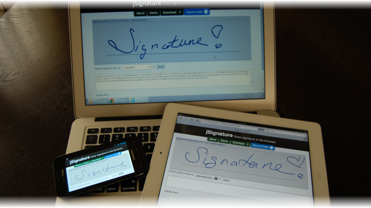

About jSignature
jSignature is a JavaScript widget (a jQuery plugin) that simplifies creation of a signature capture field in a browser window, allowing a user to draw a signature using mouse, pen, or finger.
- Works in all mainstream browsers that support Canvas or Flash
- Captures signatures as smooth vector images. (Yes, SVG is supported!)
- Ingenious, super-efficient (i.e. not lagging) real-time curve smoothing.
- Allows manipulation of signature strokes, like “Undo last stroke”
- Automatically adapts to your page’s layout and colors.
- Free and Open Source.

jSignature captures signature as vector outlines of the strokes. Although jSignature can export great bitmap (PNG) too, extraction of highly scalable stroke movement coordinates (aka vector image) of the signature allows much greater flexibility of signature rendering.
An extra effort is made to make the strokes look pretty on the screen while these are drawn by the signor. Ingenious line smoothing (pixel de-noising + curve fitting) and pressure simulation techniques were put together specifically for jSignature.
All major desktop, tablet and phone browsers are supported. HTML5 Canvas element is used by default. We fall back on Flash-based Canvas element emulator (FlashCanvas) when actual Canvas is not supported by the browser (Internet Explorer v.8 and lower).
All signature data is captured and stored internally as vectors. Same signature can be rerendered using variety of postproduction filters (scale, colorize, thicken etc) to improve presentation on printed media, small screens etc.
Real-time jSignature renders only the device-appropriate "prettiest" approximation of what we capture. Capture of data is always same - we capture as many movement coordinates as possible. Rendering of strokes differs per browser's capabilities, efficiency of the device, screen size.
This degrading and enhancing of screen representation of the captured signature is done on purpose to insure that rendering does not impede on the responsiveness of capture.
For example, on slow rendering devices (Android Browser, FlashCanvas-based Canvas emulation) smoothing is kicked up a notch to compensate for large gaps in captured stroke coordinates - a result of inefficiency of capture device. In all cases, customer should be pleased by responsiveness and beauty of the drawing.
jSignature makes it easy to pluck itself into an existing styled site. jSignature automatically detects the colors used on the wrapping element (text color = pen color, background = background) and auto-picks a pleasing middle-shade for 'decor' (signature line). jSignature adapts well to fixed and variable width web page designs, and various size screens (phones, tablets, computer screens) and automatically rescales the drawing area and signature when parent element changes size.
See demos here.
Adding jSignature to your page
jSignature depends on (more or less recent) jQuery, and (only for IE 7 and 8) on FlashCanvas. Both are included, for convenience, in the /libs folder of this project, but you can certainly use your own versions.
Note that FlashCanvas is a group of two files, flashcanvas.swf and flashcanvas.js, both of which must be located together in the same folder. Do not host them from separate folders as flashcanvas.js looks for flashcanvas.swf in the same folder it was served from.
jSignature itself has three distinct pieces of code rolled into one minified (17k) deployable:
- Code that prepares a Canvas element. It includes detection of browser features, maximizing a canvas within the confines of a div, setting up emulated Canvas using FlashCanvas, when needed.
- Code that handles actual signature capture + data import / export API. It attaches and listens to movement event handlers, stores stroke data inside data structure, handles API calls.
- Plugins that help you get the signature data in convenient for you format, like raw data coordinates, image, compressed url-compatible string, SVG.
If you are certain that your audience will be limited to a specific browser engine (you deploy through an embedded browser widget, using something like PhoneGap) you can roll up your sleeves and yank out the part #1. If you know you will need only one export / import plugin, remove the plugins you don't need from the minified deployable.
More custom data export/import plugins can be loaded separately without reminifying the main deployable. Minified file ('jSignature.min.js') you see in the repository already includes all included in this repo export, import plugins.
For the "generic" deployment scenario (which includes support of old IE) add this to your page:
<!-- you load jquery somewhere above here ... -->
<!--[if lt IE 9]>
<script type="text/javascript" src="libs/flashcanvas.js"></script>
<![endif]-->
<script src="libs/jSignature.min.js"></script>
<div id="signature"></div>
<script>
$(document).ready(function() {
$("#signature").jSignature()
})
</script>
Explained:
- The
[if lt IE 9]part loads FlashCanvas library for IE less than 9. (FlashCanvas is supported only on IE, so, there is no point doing feature detection.) - Then we load jSignature plugin.
- Next we have the
divinside which the canvas element will be created (You cannot reuse a canvas element at this time. Plugin creates its own Canvas elem inside the DIV.) - Lastly, the script invokes the signature widget within the specified DIV.
API
The following method becomes exposed on top of jQuery objects: .jSignature(String command, *args)
Arguments vary per command. When provided, command is expected to be a string with a command for jSignature. Commands supported at this time: init, reset, getData, setData, listPlugins
-
initis the default, assumed action.inittakes one argument - a settings Object. You can omit the command and just pass the settings object in upon init. Returns (in a traditional jQuery chainable way) jQuery object ref to the element onto which the plugin was applied. -
clear(also aliased asreset) clears the signature pad, data store (and puts back signature line and other decor). Returns (in a traditional jQuery chainable way) jQuery object ref to the element onto which the plugin was applied. -
getDatatakes an argument - the name of the data format. Returns a data object appropriate for the data format. -
setData(also aliased asimportData) takes two arguments - data object, (optional) data format name. When data object is a string formatted in data-url pattern you don't need to specify the data dormat name. The data format name (mime) will be implied from the data-url prefix. Returns (in a traditional jQuery chainable way) jQuery object ref to the element onto which the plugin was applied. -
listPluginstakes an argument - a string denoting the category (Onlyexport,importsupported at this time) of plugins to list. Returns an array of strings.
Usage examples:
var $sigdiv = $("#signature")
$sigdiv.jSignature() // inits the jSignature widget.
// after some doodling...
$sigdiv.jSignature("reset") // clears the canvas and rerenders the decor on it.
// Getting signature as SVG and rendering the SVG within the browser.
// (!!! inline SVG rendering from IMG element does not work in all browsers !!!)
// this export plugin returns an array of [mimetype, base64-encoded string of SVG of the signature strokes]
var datapair = $sigdiv.jSignature("getData", "svgbase64")
var i = new Image()
i.src = "data:" + datapair[0] + "," + datapair[1]
$(i).appendTo($("#someelement") // append the image (SVG) to DOM.
// Getting signature as "base30" data pair
// array of [mimetype, string of jSIgnature"s custom Base30-compressed format]
datapair = $sigdiv.jSignature("getData","base30")
// reimporting the data into jSignature.
// import plugins understand data-url-formatted strings like "data:mime;encoding,data"
$sigdiv.jSignature("setData", "data:" + datapair.join(","))
See tests and index.html for more examples.
Data Import / Export (and Plugins)
The following plugins (data formats) are part of mainline jSignature minified distributable:
-
default(EXPORT ONLY) (BITMAP) data format is compatible with output format jSignature produced in earlier versions whengetDatawas called without arguments. "Default" is now invoked (obviously) by default whenever you$obj.jSignature("getData")The data format is that produced natively by Canvas - data-url-formatted, base64 encoded (likely PNG) bitmap data that looks like this:data:image/png;base64,i1234lkj123;k4;l1j34l1kj3j...This export call returns a single data-url-formatted string. -
native(EXPORT AND IMPORT) (VECTOR) data format is custom representation of drawing strokes as an array of objects with props.x,.y, each of which is an array. This JavaScript objects structure is the actual data structure where each of the drawing strokes is stored in jSignature. The structure is designed specifically for speed and efficiency of collecting strokes data points. (Although it is a bit counter-intuitive, octopus-looking structure, it (a) allows to pile up two-axis coordinates fast without a need to create a Point objects for each data point and (b) provides for very easy loop-based processing of data.) Although you could JSONify that, pass it around, parse, render from this, it may not be the most efficient way to store data, as internal format may change in other major versions of jSignature. I recommend looking atbase30format as a direct, but compact equivalent to "native"-as-JSON. What this data is good for is running stats (size, position of signature on the canvas) and editing strokes (allowing for "undo last stroke," for example). -
base30(aliasimage/jSignature;base30) (EXPORT AND IMPORT) (VECTOR) data format is a Base64-spirited compression format tuned for absurd compactness and native url-compatibility. It is "native" data structure compressed into a compact string representation of all vectors. Code examples (.Net, Python) detailing decompression of this format into render-able form (SVG, language-native coordinate arrays) are provided in theextrasfolder. One of possible ways of communicating the data to the server is JSONP, which has a practical URL length limit (imposed by IE, of course) of no more than 2000+ characters. This compression format is natively URL-compatible without a need for re-encoding, yet will fit into 2000 characters for most non-complex signatures. -
svg(aliasimage/svg+xml) (EXPORT ONLY) (VECTOR) data format produces the signature as an SVG image (SVG XML text). All strokes are de-noised and smoothed. This format is a good medium between "easy to view" and "highly scalable." Viewing SVGs is natively supported in majority of today's browsers and, yet, this format can be infinitely scaled and enhanced for print. Data is textual, allowing for easy storage and transfer. The call tojSIgnature("getData","svg")returns an array of form["image/svg+xml","svg xml here"]. -
svgbase64(aliasimage/svg+xml;base64) (EXPORT ONLY) (VECTOR) This is same as "svg" plugin, but the SVG XML text is compressed using base64 encoding. Although many browsers now have built-in base64 encoder (btoa()), some, like Internet Explorer do not. This plugin has its own (short and efficient) copy of software-based base64 encoder which is invoked on the browsers lackingbtoa(). The call tojSignature("getData","svgbase64")returns an array of form["image/svg+xml;base64","base64-encoded svg xml here"]. This two-member array is rather easy to turn into data-url-formatted string ("data:" + data.join(",")) or turn into args and pass to server as form values. -
image(EXPORT ONLY) (BITMAP) data format is essentially same as "default" above, but parsed apart so that mimetype and data are separate objects in an array structure similar to that produced by "svg" export. Example (shortened)["image/png;base64","i123i412i341jijalsdfjijl234123i..."]. Because image export filter depends on (somewhat flaky) browser support and picks up needless data, recommend using this only for demonstration and during development.
Choosing the export / storage format.
I know you are tempted to want "images" from jSignature, but, please, control yourself, and stay away. Instead, contemplate capturing "base30" or "svg" data and enhance + render that in postproduction, server-side.
If you export "bitmap", the image will retain actual drawing colors, size, defects, and, to top it off, may not work on all browsers.
- The decor (signature line) will be on the image. if jSignature was styled with dark background + light pen color that`s exactly what you will get on the image - dark background, light drawings covering grey signature line. This image becomes virtually useless for print. The matter is worse if your background is same intensity as pen (red on blue, for example) in which case when printed black-and-white the image becomes just a dark grey rectangle. If you ever change page colors, captured image now starts to wear those colors.
- Androids 1.6 -2.2 (2.3?) dont support canvas.getDataURL method well - the cornerstone of
bitmapexport functionality. - Small screens (mobiles) produce tiny, ugly bitmaps.
- Bitmap exported by canvas is GARGANTUAN in size compared to vector because it retains all the mid-shaded and background pixels.
If you want to force yourself to use only Black on top of White signature capture web page style forever, DO use bitmap export. If you want to have your database admin scream at you because backup of database with all that bitmap data takes more than a day, DO use bitmap export. If you want your sales / business dept to scream at you because your signature capture format cannot be easily integrated into their new carefully-styled, wizbang product / service, DO use bitmap export. If you want to explain why siganture format export you chose does not work on all target platforms, DO use bitmap export. If you want to take the easy route now, and make the the IT person that will come in after you are fired do the difficult task of applying ImageMagic wizardry upon a mess of colored pixels you decided to collect, DO use bitmap export format.
If the use of the captured signature has anything to do with "business" or "printing" or "multiple presentation venues" use the Vector formats like "base30" or "svg" data and enhance + render that in postproduction. Decompression and sample, rudimentary rendering code (.Net, Python as of Feb 2012) can be found in "extras" folder. You would use these as core that provides loop-able coordinate data arrays for your own rendering logic.
Events
The dom element upon which jSignature was initialized emits 'change' event immediately after a stroke is done being added to the storage. (In other words, when user is done drawing each stroke. If user draws 3 strokes, this event is emitted 3 times, after each stroke is done.)
Here is how you would bind to that event:
$("#signature").bind('change', function(e){ /* 'e.target' will refer to div with "#signature" */ })
Event is emitted asynchronously through a "thread" ( setTimeout(..., 3) ) so you don't need to wrap your event handler into "thread" of any kind, as jSignature widget will go on and will not be waiting for you to be done with your custom event handler logic.